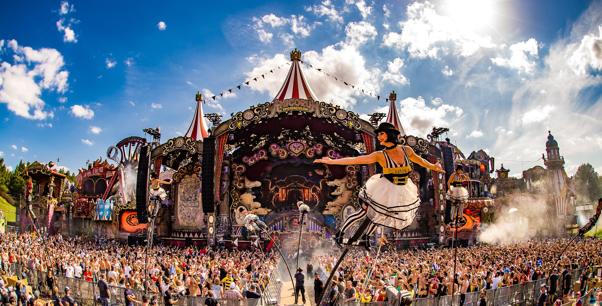

Los festivales internacionales más reconocidos

Tomorrowland, es un festival que se celebra en Bélgica, en la ciudad de Boom, y que es el sueño de mucha gente. Su eslogan
'Live Today, Love Tomorrow, Unite Forever' marca una forma de vida para mucha gente. La gran cantidad de artistas principalmente
ligados a la electrónica que pasan por sus animados escenarios hacen de este un festival único en el mundo.
¿Cuándo se celebra? Julio de 2019
¿Dónde se celebra? Boom, Bélgica
Página web del festival

Glanstonbury es uno de los festivales referentes a nivel internacional que se celebra en Gran Bretaña cada Junio.
Cuándo se celebra? Del 26 al 30 de junio de 2019
Dónde se celebra? Bristol, Inglaterra
Página web del festival
Coachella es un festival diferente, en el que la música es muy importante, pero no es lo todo. La gran cantidad
de personalidades que asisten, la forma de vestir y hasta el más mínimo detalle importa en este festival. Aún así,
artistas de la talla de Ed Sheeran o Katy Perry han actuado en el MainStage de este festival.
Cuándo se celebra? Del 12 al 21 de abril de 2019
Dónde se celebra? California, Estados Unidos
Página web del festival